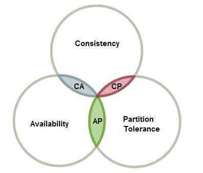
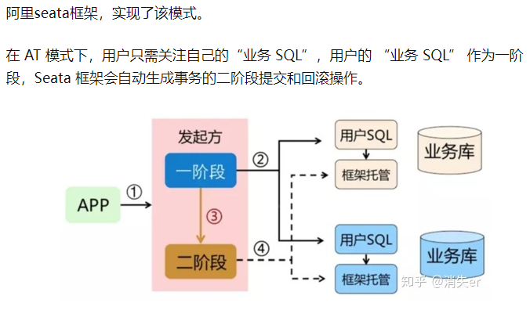
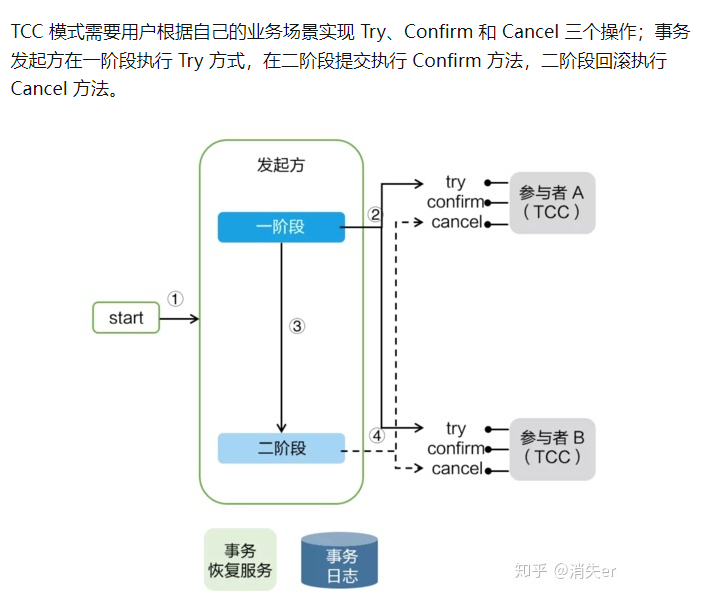
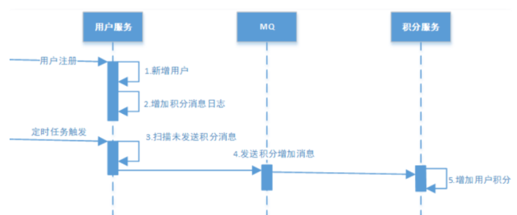

冪等性
idempotent
- 多次提交，結果不變，常見有這些辦法:
Token
- 令牌或驗證碼
- 伺服器存儲了一個令牌，然後頁面要帶上這個令牌比較，一樣才可以提交
- 提交後刪除掉token，再次點擊提交就會失敗
- 但是F5刷新的話就不一樣了，會有新的token產生
- 注意: 獲取redis令牌 + 令牌匹配 + redis刪除，全程要保證原子性，使用lua腳本
鎖
數據庫悲觀鎖
Pessimistic Lock
- 就是排他鎖，所謂悲觀在於覺得總有刁民想亂搞我的data，所以自己拿到鎖就把data藏到大衣裡，完全不給其他人用，連看都不給看
- 當一個SQL command獲得悲觀鎖後，其他的SQL command 無法讀取無法修改，直到悲觀鎖被釋放後才能執行，例如:
select* from xxx where id = 1 for update;
- 悲觀鎖使用時一般伴隨事務一起使用，數據鎖定時間可能會很長，需要根據實際情況選用
- 另外要注意的是，id字段一定是主鍵或者唯一索引，不然可能造成鎖表的結果，處理起來會非常麻煩
- 資料庫中的行鎖，表鎖，讀鎖，寫鎖，以及syncronized實現的鎖均為悲觀鎖
數據庫樂觀鎖
Optimistic Lock
- 允許多個 SQL command 來操作 table，但是要帶上版本號
- 當 SQL command 想要變更欄位 data 時會先把之前取出 version 跟 table 現在的 version 做對比，如果相同就代表這段期間沒人修改可以執行；如果不同就會禁止這次的操作
- 這種方法適合在更新的場景中，例如:
update t_goods set count = count-1,version =version + 1 where good_id=2 and version = 1
- 樂觀鎖主要使用於處理讀多寫少的場景
分佈式鎖
- 不管多少服務，限制同時都只有一人能操作
- 參考之前的筆記: https://yoziming.github.io/post/220128-gulimall-11-synchronized-lock/
唯一約束
- 利用資料庫
UNIQUE唯一約束訂單號，就無法生成同樣訂單 - 或是建立一個防重表，要操作時就在防重表插入例如訂單號，插入成功才可以操作，插入失敗表示有別人正在操作這筆訂單
- 不採用，DB慢
- redis set防重: 全局請求唯一id 調用接口時生成一個唯一ID，redis將數據保存到set集合中(特性是不可重複)，存在即處理過
- 可以使用nginx設置每一個請求的唯一id
proxy_set_header X-Request-ld $request_id;
提交訂單


流程
- 前端POST提交: OrderSubmitVo
- API: /submitOrder
- 下單成功轉發支付頁 pay.html
- 下單失敗重定向跳轉 confirm.html 重新查一遍
- service下單流程：
- 驗令牌原子操作：查詢，比較，刪除（lua操作）
- 創建訂單封裝Entity，然後入庫
- 獲取金額，運費遠程調用ware服務…
- 驗價格，計算的應付價格-提交的應付價格<0.01通過，否則 return
- 鎖庫存WareSkuLockVo，遠程調用ware
程式碼
超級繁瑣就列個大概，重點在於分佈式事務
- OrderWebController.java
// 下單
@PostMapping(value = "/submitOrder")
public String submitOrder(OrderSubmitVo vo, Model model, RedirectAttributes attributes) {
try {
SubmitOrderResponseVo responseVo = orderService.submitOrder(vo);
//下單成功來到支付選擇頁
//下單失敗回到訂單確認頁重新確定訂單信息
if (responseVo.getCode() == 0) {
//成功
model.addAttribute("submitOrderResp", responseVo);
return "pay";
} else {
String msg = "下單失敗";
switch (responseVo.getCode()) {
case 1:
msg += "令牌訂單信息過期，請刷新再次提交";
break;
case 2:
msg += "訂單商品價格發生變化，請確認后再次提交";
break;
case 3:
msg += "庫存鎖定失敗，商品庫存不足";
break;
}
attributes.addFlashAttribute("msg", msg);
return "redirect:http://order.mall.com/toTrade";
}
} catch (Exception e) {
if (e instanceof NoStockException) {
String message = ((NoStockException) e).getMessage();
attributes.addFlashAttribute("msg", message);
}
return "redirect:http://order.mall.com/toTrade";
}
}
- OrderServiceImpl.java
/**
* 提交訂單
*
* @param vo
* @return
*/
@Transactional
@Override
public SubmitOrderResponseVo submitOrder(OrderSubmitVo vo) {
confirmVoThreadLocal.set(vo);
// 下單後準備返回的結果
SubmitOrderResponseVo responseVo = new SubmitOrderResponseVo();
responseVo.setCode(0); // 預設返回0是成功
// 獲取當前用戶登入的信息
MemberResponseTo memberResponseTo = LoginUserInterceptor.loginUser.get();
// 驗證令牌是否合法，令牌的對比和刪除必須保證原子性，LUA腳本
String script = "if redis.call('get', KEYS[1]) == ARGV[1] then return redis.call('del', KEYS[1]) else return " +
"0 end";
// 拿前端傳來的token
String orderToken = vo.getOrderToken();
// 通過腳本原子驗證令牌和刪除令牌
Long result = redisTemplate.execute(new DefaultRedisScript<Long>(script, Long.class),
Arrays.asList(USER_ORDER_TOKEN_PREFIX + memberResponseTo.getId()),
orderToken);
// 若令牌驗證失敗，注意腳本0是失敗，跟前面SubmitOrderResponseVo 0=成功相反
if (result == 0L) {
responseVo.setCode(1);
return responseVo;
} else {
// 令牌驗證成功，創建、下訂單、驗令牌、驗價格、鎖定庫存
// 1、創建訂單、訂單項等信息
OrderCreateTo order = createOrder();
// 2、驗證價格
BigDecimal payAmount = order.getOrder().getPayAmount();
BigDecimal payPrice = vo.getPayPrice();
if (Math.abs(payAmount.subtract(payPrice).doubleValue()) < 0.01) {
// 金額對比，保存
saveOrder(order);
// 4、庫存鎖定,只要有異常，回滾訂單數據
// 訂單號、所有訂單項信息(skuId,skuNum,skuName)
WareSkuLockTo lockVo = new WareSkuLockTo();
lockVo.setOrderSn(order.getOrder().getOrderSn());
// 獲取出要鎖定的商品數據信息【order裡面存儲的是Entity】
List<OrderItemTo> orderItemTos = order.getOrderItems().stream().map((item) -> {
OrderItemTo orderItemTo = new OrderItemTo();
orderItemTo.setSkuId(item.getSkuId());
orderItemTo.setCount(item.getSkuQuantity());
orderItemTo.setTitle(item.getSkuName());
return orderItemTo;
}).collect(Collectors.toList());
lockVo.setLocks(orderItemTos);
// 出現的問題：扣減庫存成功了，但是由於網絡原因超時，出現異常，導致訂單事務回滾，庫存事務不回滾(解決方案：seata)
// 為了保證高併發，不推薦使用seata，因為是加鎖，并行化，提升不了效率,可以發消息給庫存服務
R r = wareFeignService.orderLockStock(lockVo);
if (r.getCode() == 0) {
// 鎖定成功
responseVo.setOrder(order.getOrder());
//int i = 10/0;
// 訂單創建成功，發送消息給MQ
rabbitTemplate.convertAndSend("order-event-exchange", "order.create.order", order.getOrder());
// 刪除購物車裡的數據
redisTemplate.delete(CART_PREFIX + memberResponseTo.getId());
return responseVo;
} else {
//鎖定失敗
String msg = (String) r.get("msg");
throw new NoStockException(msg);
// responseVo.setCode(3);
// return responseVo;
}
} else {
responseVo.setCode(2);
return responseVo;
}
}
}
複習本地事務
- 原理: 連到SQL的是同一條連結，多個操作完成後用
commit()手動提交，否則抓到異常就rollback()- 要嘛全部成功、要嘛全部失敗
- 隔離級別: 讀未提交、讀已提交、可重複讀、序列化，越嚴格越安全但效率也就越低
- MySQL預設的事務隔離級別為: Repeatable read
- Spring封裝成
@Transactional
spring事務參數
// 修改事務隔離級別
@Transactional(isolation = Isolation.REPEATABLE READ)
// 修改傳播級別
@Transactional(propagation = Propagation.REQUIRED)
// 設定超時
@Transactional(timeout = 30)
事務傳播
當事務的方法被嵌套時，例如一個事務方法被另一個事務方法調用時，這個事務方法應該如何進行
PROPAGATION_REQUIRED: 如果當前沒有事務，就創建一個新事務，如果當前存在事務，就加入該事務。是最常用的設置PROPAGATION_SUPPORTS: 支持當前事務，如果當前存在事務，就加入該事務，如果當前不存在事務，就以非事務執行PROPAGATION_MANDATORY: 支持當前事務，如果當前存在事務，就加入該事務，如果當前不存在事務，就拋出異常PROPAGATION_REQUIRES_NEW: 創建新事務，無論當前存不存在事務，都創建新事務PROPAGATION_NOT_SUPPORTED: 以非事務方式執行操作，如果當前存在事務，就把當前事務掛起PROPAGATION_NEVER: 以非事務方式執行，如果當前存在事務，則拋出異常PROPAGATION_NESTED: 如果當前存在事務，則在嵌套事務內執行。如果當前沒有事務，則執行與 PROPAGATON_REQUIRED類似的操作- 重點: REQUIRED、REQUIRES_NEW
案例：b、c與a方法是否共用一個事務
@Transactional(timeout=30)
public void a() {
b();// a事務傳播給了b事務，並且b事務的設置失效
c();// c單獨創建一個新事務
}
@Transactional(propagation = Propagation.REQUIRED, timeout=2)
public void b() {
}
@Transactional(propagation = Propagation.REQUIRES_NEW)
public void c() {
}
坑
- 如果方法a、b、c都在同一個service裏面，事務傳播行為不生效，共享a的事務
- 原理: 事務是用代理對象來控制的，內部調用b()、c()就相當於直接調用沒有經過事務，繞過了代理對象
- 解決: 使用aspectJ代理，或是注入自己(Spring已經解決了循環依賴問題，透過三級Map)
分散式交易
Distributed Transactions，中國稱為分佈式事務
- 分佈式事務不可用拋異常的方式回滾，因為異常可能是遠程調用產生的異常
- 例如遠程已經調用完了，但返回時出現網路故障，本地
@Transactional收到異常就算回滾也沒用，因為它可管不到遠程的那些
- 例如遠程已經調用完了，但返回時出現網路故障，本地
CAP定理
又稱CAP原則，指的是在分佈式系統中的資料，要嘛犧牲一致性，要嘛犧牲可用性

-
Consistency 一致性: 在分佈式系統中的所有數據，在同一時刻是否同樣的值
-
Availability 可用性: 集群內一部份機器網絡通信故障，是否還能繼續工作(數據的分布量是否夠多)
- 為了分區容錯性，一致性跟可用性只能二選一
-
Partition tolerance 分區容錯性: 分佈式系統總會出現網絡故障，當節點之間不流通的時候就形成分區(Partition)
- 分區容錯的意思是，當你一個資料項目只在一個節點中保存，那麼分區出現後，和這個節點不連通的部分就訪問不到這個資料了。這時分區就是無法容忍的
- 提高分區容忍性的辦法就是一個資料項目複製到多個節點上，這一資料項目就可能分佈到各個區裡。容忍性就提高了。
- 然而，要把資料複製到多個節點，就會帶來一致性的問題，就是多個節點上面的資料可能是不一致的。要保證一致，每次寫操作就都要等待全部節點寫成功，而這等待又會帶來可用性的問題
- 總的來說就是，資料存在的節點越多，分區容忍性越高，但要複製更新的資料就越多，一致性就越難保證。為了保證一致性，更新所有節點資料所需要的時間就越長，可用性就會降低
-
為了在分布式系統實現一致性，Lesile Lamport提出了Paxos協議
- 很難懂又難用，已過時。由raft算法接棒
raft算法
保證分布式系統中資料的一致性
- 演示: http://thesecretlivesofdata.com/raft/
- 核心觀念: 領導選舉、日誌複製
領導選舉
-
節點啓動預設都是隨從狀態
-
節點如果沒有監聽到領導者命令自己(找不到大哥，形成分區了)，就轉變成候選者，經過多輪投票產生新領導
- 選舉超時: election timeout 隨從變成候選者的時間，150ms and 300ms隨機的
日誌複製
- 客户端通知領導修改一個數據，領導先創建一個節點日誌
- 領導將這條日誌 發送給所有所有隨從節點
- 隨從節點收到並返回確認消息給領導
- 領導等待大多數隨從節點的確認消息，領導提交數據，然後通知隨從節點可以提交了
- 隨從節點也提交數據。最後領導節點給請求返回提交成功
就像我要求開船，船長問孩子們準備好了嗎，孩子們回應船長，船長收到大多數回應就認為可以開船，自己開船並且叫孩子們也開船
當大家都開船，回應給我說船開了
- 當分區發生，大多數人的那區可以提交，少部分的那區雖然可能有領導，但由於一直收不到大多數確認，所以無法提交
- 直到分區重新合併(網路修好了)，舊領導退位，並且跟着舊領導未提交的數據需要回滾，並且同步新領導的日誌
BASE理論
分布式系統下網路故障必定會發生，但仍要讓用戶可用，即保證P和A，捨棄C的強一致性，改為弱一致性
- Basically Available 基本可用: 分佈式系統在出現故障的時候，允許損失部分可用性(例如響應時間、功能上的可用性)
- Soft State 軟狀態: 允許系統存在中間狀態，例如告訴用戶正在排隊中
- Eventual Consistency 最終一致性: 系統中的所有數據副本經過一定時間後，最終能夠達到一致的狀態，是一種弱一致性
分佈式事務幾種方案
2PC
2 phase commit二階提交
- 劃分出了事務參與者和協調者的角色，並將整個過程劃分成兩個階段
- 第一階段: 事務協調器要求每個涉及到事務的參與者預提交(precommit)此操作，並反映是否可以提交
- 第二階段: 所有事務預提交了各自的結果後，由協調者決定最終事務是成功(commit)還是失敗(rollback)
- 如果有任何一步驟失敗，那麼所有參與者都會被要求回滾
XA Transaction
- 由資料庫來完成二階提交
- XA被許多資料庫如Oracle、DB2、SQL Server、MySQL支援
- 優勢在於簡單，缺點是面對併發時性能差，故很少用
AT模式
Auto Transiaction 自動事務模式
- 優勢在於簡單無侵入

TCC模式
需要手動編寫回滾的方法(例如在try+1，就要在cancel-1)
- 優勢在於高性能，多被採用

最大努力通知
Best-effort delivery 是一種柔性事務

-
適用於最終一致性時間敏感度低的業務，且被動方處理結果不影響主動方的處理結果
-
最大努力通知型的實現方案，一般符合以下特點:
- 不可靠消息: 主動方在完成業務處理之後，向被動方發送消息，直到通知N次後不再通知，允許消息丟失(不可靠消息)
- 定期校對: 被動方根據定時策略，向主動方查詢(主動方提供查詢介面)，恢復丟失的業務消息
-
典型的使用場景: 如銀行通知、商戶通知等
可靠消息最終一致性

- 基於MQ實現
- 當事務發起方執行完成本地事務後並發出一條消息，事務參與方(消息消費者)一定能夠接收消息並處理事務成功
- 此方案強調的是只要消息發給事務參與方最終事務要達到一致(異步確保性)
上次修改於 2022-02-06